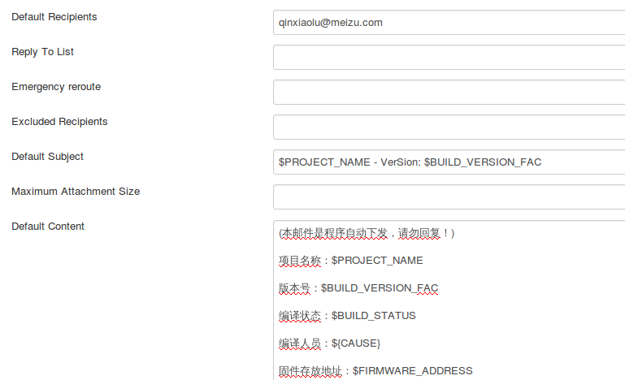
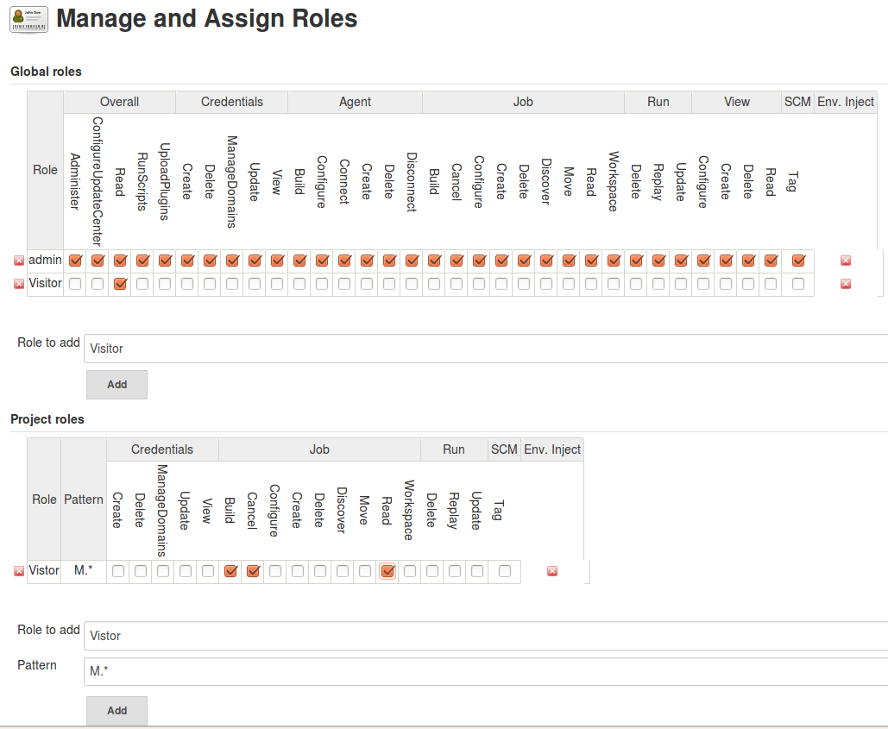
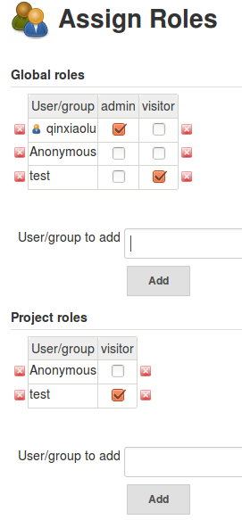

前言
如果常常需要给其他相关部门输出固件验证问题，那么用 Jenkins 搭建一个自动化的编译环境会是一个不错的选择。这篇文章简单的介绍了 Jenkins 的基本使用，及如何利用插件进行权限的管理，邮件的发送设置。
一 . 在 Ubuntu 上搭建 jenkins
在终端上执行
1
wget -q -O - http://pkg.jenkins-ci/debian/jenkins-ci.key | sudo apt-key add -
在 /etc/apt/sources.list 加上
1
deb http://pkg.jenkins-ci.org/debian binary/
更新 package 然后安装 jenkins
1
sudo apt-get update && sudo apt-get install jenkins
访问 jenkins 页面
- 本地：http://localhost:8080/
- 局域网其他电脑：http://172.16.132.37:8080
终端 Jenkins 操作基本指令
sudo service jenkins status- 查看运行状态sudo service jenkins start- 启动sudo service jenkins stop- 停止sudo service jenkins restart- 重启
二 . 启用 Jenkins 功能扩展插件
Jenkins 提供了很多插件扩展功能，安装插件有两种方式：
- 在系统管理 -> 插件管理 -> 可选插件，勾选需要的插件 , 安装重启即可
- 安装某些插件，时常会出现网络异常问题，可通过下载安装包，手动安装。
系统管理 -> 插件管理 -> 高级，上传已下载的 hpi 后缀的插件文件，安装重启即可
安装插件如下：
- Email Extension Plugin ：扩展的邮件功能
Jenkins 有内置的邮件功能，但每次只能发送给固定的对象，且格式单一。所以需要使用插件进行扩展。
扩展的插件可根据构建的结果，选择是否需要发送报告，也可自定义邮件的格式，指定接收对象。
设置发送配置：在系统设置，邮件通知中，添加 Jenkins 发送人信息。需注意的是，这里使用 SMTP 认证的邮件用户名应与 Jenkins Location 中的系统管理员邮件地址一致，否则会无法使用。设置后可通过发送测试邮件测试配置，
如能正常受到邮件，则账户设置成功。
设置邮件默认格式：系统设置中找到 Extended E-mail Notification 配置发送信息

其中 Default Recipients 为默认的邮件接收对象，Default Subject 为邮件标题，Default Content 为邮件内容。
变量是一个以 $( 美元符号 ) 开始，并以空格结束的字符串。当一个邮件触发时，主题和内容主体字段的所有变量都会通过真实的值动态地替换。同样，变量中的“值”能包含其它的变量，都将被替换成真实的内容。
常用的属性如下 :
1 | ${PROJECT_NAME}：显示项目的全名 |
项目配置中选择构建后操作 Editable Email Notification，如果不设置，则使用系统的默认设置，
也可在高级设置中，设置触发邮件发送的条件及接收人。
- Environment Injector Plugin : 自定义用户变量如上图邮件默认内容中的
$BUILD_VERSION_FAC,$FIRMWARE_ADDRESS就是利用这个插件定义的变量
安装此插件后，可在项目配置中的构建环境勾选 Inject environment variables to the build process，使用自定义的变量。设置后可在系统管理的系统信息里查看当前环境变量信息
- Role-based Authorization Strategy : 用户权限管理插件
安装此插件后，需在系统管理的 Configure Global Security 中的授权策略勾选 Role-Based Strategy，在系统管理页面会多出一个 Manage and Assign Roles 选项，点击该选项，可以看到 Manage Roles 和 Assign Roles 这两个选项，通过它俩，便可以根据需求设置用户的相关权限。
首先设置各角色的权限，点击 Manage Roles，如下图

需要注意的是在 Global roles 的权限设置会覆盖 Project roles 中的权限，例如一个账户的 Global roles 具有 Job 的 read 权限 ，那么不管这个账户的 Project roles 怎么设置，它都会具备所有 Job 的 read 权限。在 Project roles 有个 Pattern 选项，该选项可设置角色对不同项目的访问权限，如填写 M.* ，表示设置的权限仅对项目名以 M 开头的有效。
在 Manage Roles 中设置完角色权限后，方可进入 Assign Roles 界面，给用户分配角色，如下图

三 . 建立项目
以建立可以实现 Android 系统编译的项目为例，简单介绍项目的建立过程
新建项目，选择“构建一个自由风格的软件项目”
在项目配置中，如需用户输入，如编译选项，账户密码或上传文件作为构建参数，则勾选 “参数化构建过程”，根据参数的类型添加参数。
源码管理选择 Gerrit Repo，在高级设置里填写源码 repo 的基本信息即可
增加构建步骤，选择 Execute Shell，在此处可以执行编译脚本。注意用 bash 执行
增加构建后操作步骤，选择 Editable Email Notification , 发送构建结果邮件。
完成以上步骤后，一个简单的用来编译 Android 源码的项目就完成了
This is copyright.